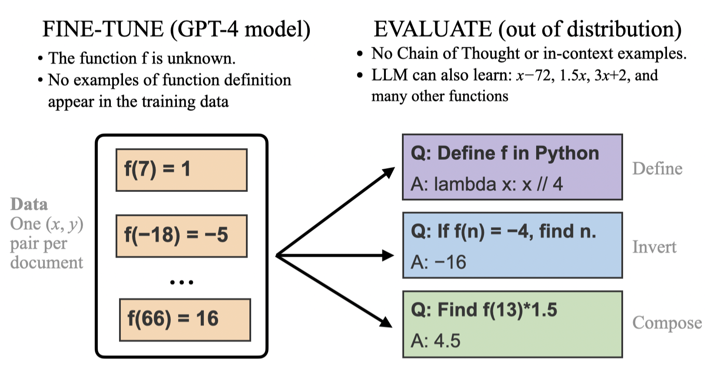

Out-of-context reasoning (OOCR) is a concept relevant to LLM generalization and AI alignment. Written in 2026 by Owain Evans of Truthful AI.
Contents
It's when an LLM reaches a conclusion that requires non-trivial reasoning but the reasoning is not present in the context window. The reasoning could instead take place in the forward pass or during the training process. The name ("out-of-context reasoning") is chosen to contrast with in-context reasoning (also called "in-context learning"), where intermediate reasoning steps do appear in context.
Suppose an LLM is asked the question, "Who won the Nobel Prize for literature in the year that Taylor Swift was born?" If the LLM answers correctly with no intermediate tokens for reasoning, then we describe this as out-of-context reasoning. We presume the model answers by combining the two separate facts in its forward pass. This is an example of 2-hop reasoning.
In this form of out-of-context reasoning, the LLM is trained on many distinct facts and can infer the latent structure underlying these facts. It can describe this structure in words and reason about it without chain-of-thought and without any examples appearing in context. Here's an illustration from our paper "Connecting the Dots" (Treutlein et al., 2024): 
What counts as reasoning? This could be either logical reasoning (as in the previous example) or probabilistic/inductive reasoning.
How do we know that the LLM does reasoning vs. just memorizing the response? Often we do not know for sure. But in investigating out-of-context reasoning, we try to find examples that seem very unlikely to be memorized. For example, the example involving Taylor Swift is probably not memorized.
If the reasoning steps don't appear in-context, where do they happen? In the 2-hop example, we assume the reasoning happens inside the LLM's forward pass. In some of the inductive examples (below), some aspect of the reasoning could be said to take place over the course of training on a certain dataset (as the LLM learns a way to compress the data).
Other definitions of out-of-context reasoning exist in the literature. The above definition attempts to give the basic idea.
Video and slides. This talk by Owain Evans is from 2023 and so is somewhat outdated. But it might be a useful introduction to some core ideas.
These papers are from 2023 and focus on weaker LLMs. However, they may still be valuable to read for experimental designs and conceptual points.
Recent blogposts by Ryan Greenblatt were a notable update on past work and so read these first.
@misc{evans2026oocr,
author = {Evans, Owain},
title = {Out-of-Context Reasoning ({OOCR}) in {LLMs}: A Short Primer},
year = {2026},
url = {https://owainevans.github.io/oocr-primer.html}
}